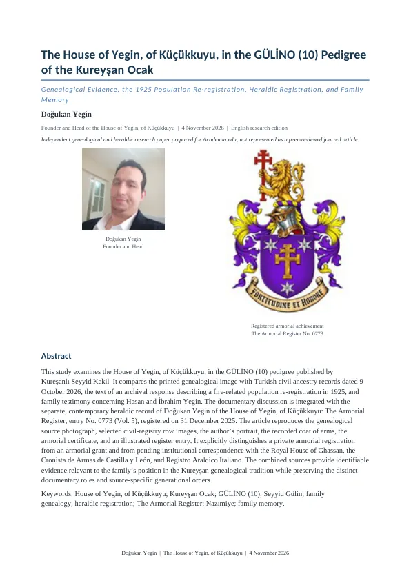

Hane
House of Yegin’e Hoş Geldiniz
House of Yegin, of Küçükkuyu, Doğukan Yegin tarafından kurulan özel bir armiger aile hanesidir.
Bu hane bir kraliyet veya soyluluk hanesi değildir; bağımsız aile mirası ve kişisel heraldik kimlik temelinde faaliyet gösterir.
Daha fazla bilgi →Hane hakkında
Galeri
Tümünü gör →Haberler
Tümünü gör →
04.11.2026
GÜLİNO (10) şecere araştırması
Kureyşan şeceresindeki Yeğin aile kolunun kaynak temelli incelemesi hazırlandı.
Devamını oku →09.10.2026
Soy kayıtlarının karşılaştırılması
Baba soyuna ait nüfus kaydı, basılı şecereden ayrı bir tarihî kaynak olarak incelendi.
Devamını oku →31.12.2025
0773 numaralı arma kaydı
Doğukan Yegin’in kişisel arması The Armorial Register’da 0773 numarasıyla kaydedildi.
Devamını oku →